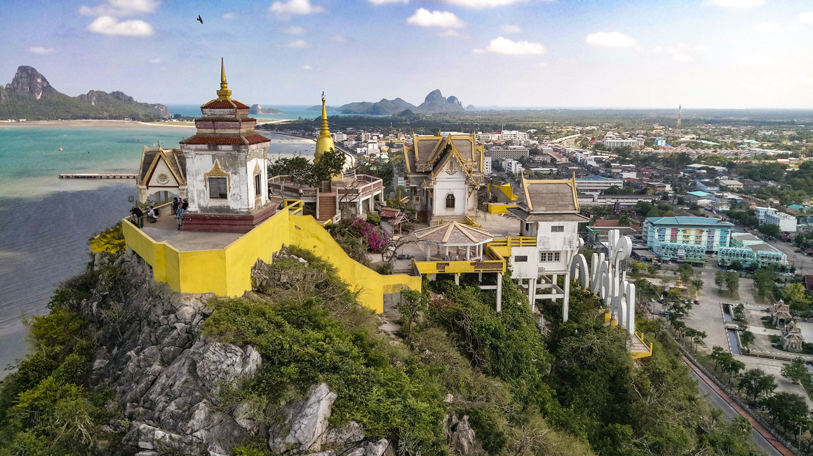

แหล่งท่องเที่ยวแนะนำ
ชวนเที่ยวเมืองสามอ่าว จังหวัดประจวบคีรีขันธ์ สัมผัสธรรมชาติ ชมวิวทะเล และสถานที่สำคัญของชุมชน
เขาช่องกระจก

เขาช่องกระจกเป็นสถานที่ท่องเที่ยวสำคัญ และเป็นสัญลักษณ์ของเมืองประจวบคีรีขันธ์ ตั้งอยู่บริเวณด้านหลังศาลากลางจังหวัด มีทิวทัศน์ภูเขาและทะเลที่สวยงาม
ภูเขามีความสูงประมาณ 245 เมตรจากระดับน้ำทะเล นักท่องเที่ยวสามารถเดินขึ้นบันไดจำนวน 396 ขั้น เพื่อชมวิวเมืองประจวบคีรีขันธ์และอ่าวทะเลจากมุมสูง
ข้อมูลการท่องเที่ยว
เวลาเปิด: 05.00 – 20.00 น.
ที่ตั้ง: ด้านหลังศาลากลางจังหวัดประจวบคีรีขันธ์
ศาลหลักเมืองประจวบคีรีขันธ์

ศาลหลักเมืองเป็นสถานที่สำคัญ และเป็นศูนย์รวมจิตใจของชาวเมืองประจวบคีรีขันธ์ ตั้งอยู่บนถนนสละชีพ ด้านข้างศาลากลางจังหวัด เป็นสถานที่ที่ประชาชนนิยมเดินทางมาสักการะ เพื่อความเป็นสิริมงคล
ตัวศาลมีสถาปัตยกรรมทรงจตุรมุขยอดปรางค์ 9 ชั้น ตกแต่งด้วยศิลปะแบบพุทธศิลป์ผสมผสานศิลปะไทย ภายในประดิษฐานเสาหลักเมือง ที่มีความสำคัญทางประวัติศาสตร์
ข้อมูลการท่องเที่ยว
เวลาเปิด: 08.00 – 19.00 น.
ที่ตั้ง: ถนนสละชีพ อำเภอเมืองประจวบคีรีขันธ์